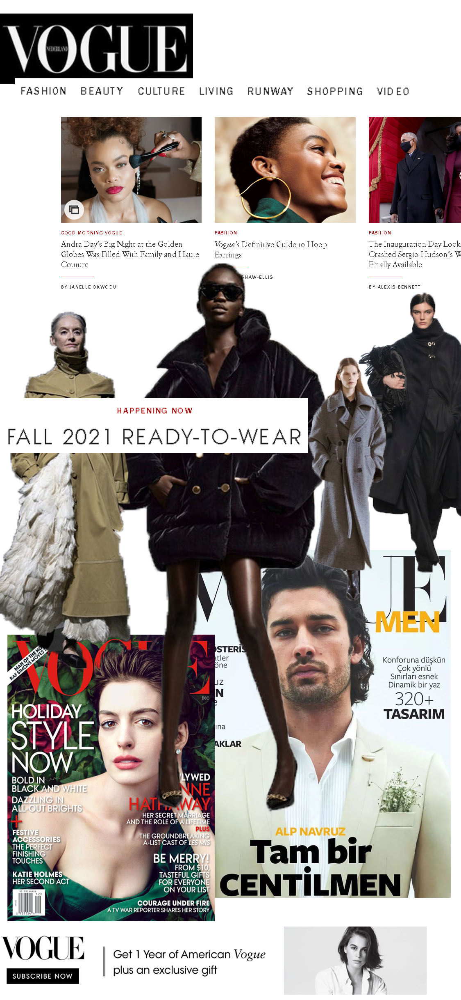

Jiaan Hu's Portfolio Website
About myself
Hi, I'm Jiaan Hu,is a student from Graphic Design.
Well, I actually have some experience with coding and some language associate with computer science.
I am a very crafty person, so this site will probably include some of the crafts I have done before.
I think this won't be worthless, coding can be use in many way in this world full of technology.
My interest

This is my work from last year, it's a fashion poster.
I really like this one because I get a high score.
The image displaying on the left is my work.
Now I would like to introduce two artist I admire, who have a really big infulence on my practice.
The first one will be Alexey brodovitch, he is a photographer in 20th century. I am really inspired by his composition use in photo and the combination he put with graphic.
This is the first website I have produced.
He may have many problems and is not so perfect.
But I believe I can improve myself and make a better website after my later study.
Hope you will also enjoy the my page.
Have a nice day!!!